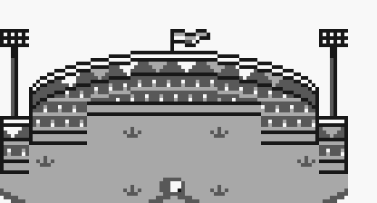
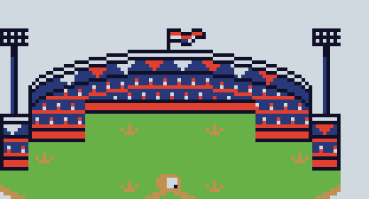
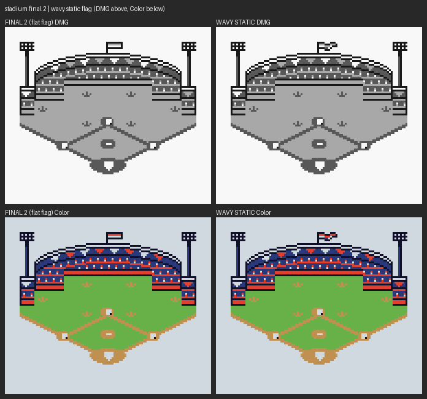
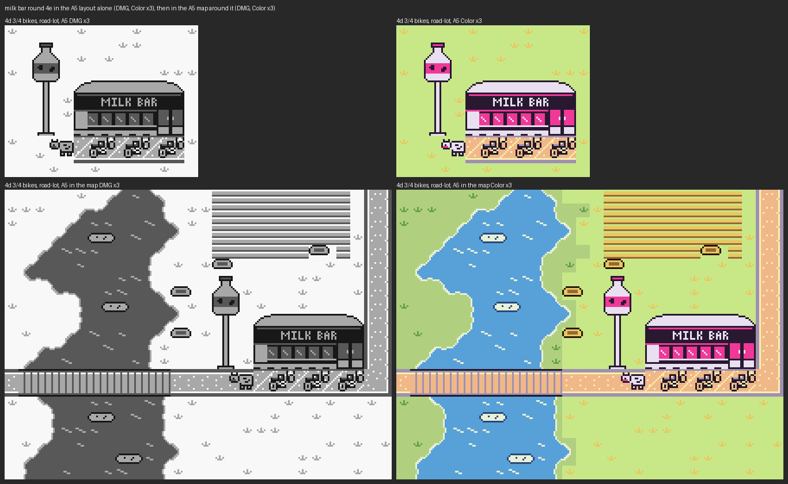
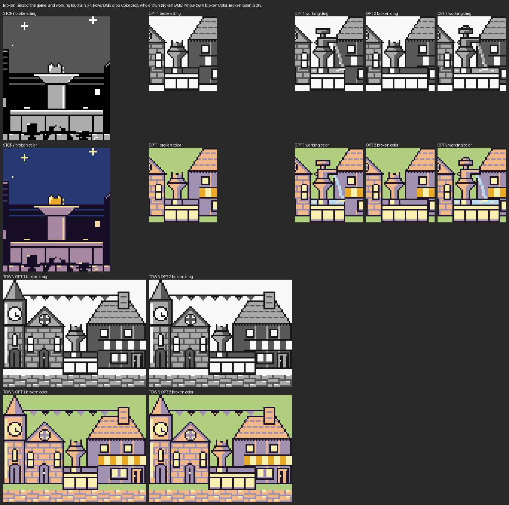
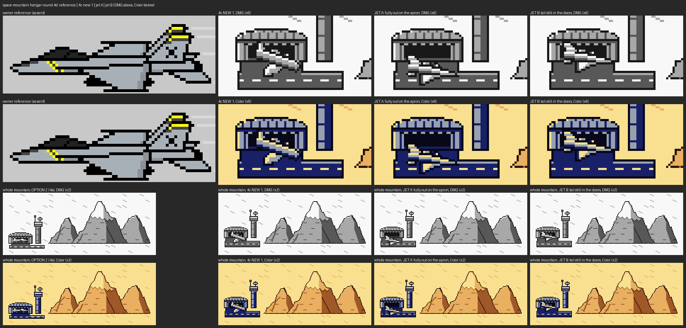

Every question waiting on your answer, with its pictures. Answered questions come off this list. Reply in chat with the number, e.g. "Q12: shared".
5 open · updated 2026-11-06
Q104
Stadium flag
Wavy flag: yes. Animate it in the game too (small engine job) or keep it still?
Still: rippled edges, a fold, the end trailing. No extra cost.
Animated: 3 frames, gentle, no flashing. Same VRAM, 4 more tiles in ROM, a small engine job. DMG and Color.
The flag is small: no room above the stands without growing the stadium.
Wave: DMG | Color


Flat flag | wavy flag

Q106
Milk bar lot and bikes, layout A5
OK to build / bikes need another pass?
In A5 the milk bar sits on the ring road's corner; the lot is that road widened up to the diner, in the road's colours, slanted bays.
Bikes: 3/4, heading toward the door. Small; the weakest part.
Fits its space in A5. Import fix on my side: the cow stands on the road and moves up onto the grass. +1 tile. DMG and Color.
Alone | in the A5 map

Q107
Town fountain, miniature
On hold: being centred like the story fountain, with the water falling on both sides.
Broken (most of the game): a jagged stub on the bowl, like the story after the explosion; dry basin. Working: the tap statue, water now leaving the spout.
Both states use the same space; the game swaps them when the story fixes it (engine job at import). 11-12 cells change.
Not gold: the palettes around the town are full. One jet. Option 2: 544 tiles broken, 547 working (now 546). DMG and Color.
Story broken | opt 1 broken, working | opt 2 broken, working

Q108
Hangar jet
Jet A (fully out on the apron) / Jet B (tail still in the doors, recommended)?
A small fighter in the style of your example: pointed nose, dark canopy, delta wing, tall swept fin with two stripes, rolling out at a slight angle.
B reads cleaner; A's wing crowds the runway edge.
Stripes are pale yellow on Color (the runway's colour), white on DMG. A 99 tiles, B 97 (plane inside was 93).
Your example | last round | Jet A | Jet B

Q109
Story fountain's golden spigot
On hold: three mockups of the golden spigot with water from its spout are being drawn.
In the story pictures the water comes from two side streams, not from the tap.
Yes changes the story screens with the fountain (intro, finale, credits) and their goldens; the map fountain would follow.
No: the map copies the story as it is (side streams, dry tap).